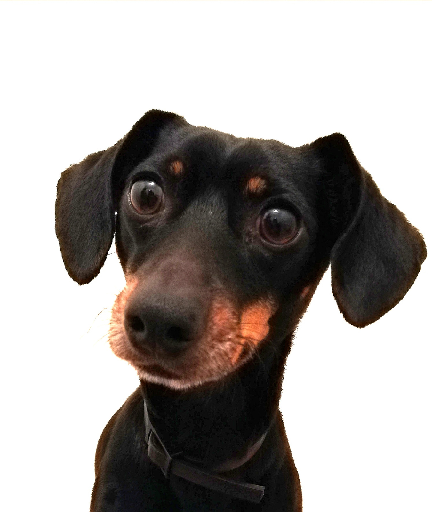

Toggling light/dark mode
Toggle light/dark mode of this page by clapping your hands! Give it a try! Below you can see a top team member

Toggle light/dark mode of this page by clapping your hands! Give it a try! Below you can see a top team member